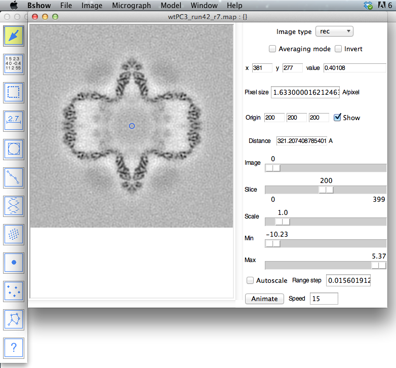

Running Bshow
Bshow requires Tcl/Tk version 8.3 or later. Bshow can be started from the command line with or without an image file name:bshow
bshow file.img
Macintosh OS X
On Macintosh OS X, bshow needs to be set up to properly use it on the command line or through double clicking on the Bshow application (see Installation). On the command line, bshow has to be started through an intermediate script called bshowX:
bshowX file.img
The main window
The main window has a menu bar, a panel for the display of 2D images and slices of 3D images, and a list of controls and information fields on the right side. (The tool panel on the left is described here.)
Menu bar:
- File:
- Open - read an image file
- Save - overwrite the current image file
- Save as - write an image with a new file name
- Save region - write a selected region or the displayed slice to an image file
- File browser - open a persistent dialog box to select images.
- Revert - reset the image to last version on disk.
- Get info - open a dialog box with image information.
- Write PostScript - capture the image window into a PostScript file.
- Quit
- Image:
- Set scales - alternative to using the sliders (see below).
- Switch slices and images - change how an image is arranged.
- Modify image - change the image in memory.
- Fix type sign - change between signed and unsigned integer types.
- Set origin - Specify the image origin.
- Center origin - shift the origin to the center of the image.
- Shift origin to zero - shift the origin to the lower left back corner.
- Crop - crop the image based on the region selected by the selection tool.
- Pad - pad the image to a larger size.
- Bin - bin the image by an integer factor.
- Montage - lay out a montage of slices or multiple 2D images.
- Histogram - display a simple histogram of the image.
- Fourier transform - calculate the Fourier transform (preserves the complex nature of the data).
- Power spectrum - calculate a power spectrum from the image (loses the phase information).
- Diffraction - analyse a diffraction pattern.
- Micrograph:
- Read parameters - read micrograph parameters from a file (such as a STAR file).
- Write parameters - write micrograph parameters to a file (such as a STAR file).
- Edit parameters - open a text editor to display and modify the current parameter file.<
- Change image - select another image from a micrograph parameter file.<
- Fit CTF - open a dialog box for fitting a CTF curve to a power spectrum.
- Particles - open a dialog box for picking single particle images in a micrograph.
- Filaments - open a dialog box for picking filaments in a micrograph.
- Helix - open a dialog box for analysis of helical diffraction patterns.
- Crystallography - open a dialog box for analysis of crystallographic diffraction patterns.
- Tomography - open a dialog box for tomographic alignment and reconstruction.
- Model:
- Read model - read model of components from a file (STAR, PDB or CMM).
- Write model - write model of components to a file (STAR, PDB, CMM).
- Edit model - open a text editor to display and modify the current model file.
- Set views - calculate default views for model components.
- Delete all components - delete all components and links.
- Delete non-selected components - delete components not selected.
- Add or update component type - add or change a component type.
- Extract marked panels - extract panels marked as components from a multi-level mask.
- Generate particles - convert components into particles.
- Analyze component symmetry - determine the point group symmetry of a model.
- Window (exposes existing windows):
- Main
- Tools
- Magnify - show a magnified view of the region under the mouse in 2D or 3D.
- Voxels - record clicked voxel coordinates and values.
- Selection - select a region and reports the statistics.
- CTF
- Particles
- Filaments
- Helix
- Crystallography
- Tomography
- Model
- Help:
- Bshow Help - switch to on-line help with bshow.
- About Bshow - open a message box with information about Bshow version
- Change cursor - select a cursors.
- Preferences - open a dialog box with user settings: parameters and colors of objects
- Save settings - save global parameters to the .bshow file
Image type:
Indicates and sets the type of image displayed to specify type-specific behavior:
- (blank) - no image type associated with the image.
- mg - micrograph (2D)
- frame - movie frames (2D)
- part - particle image
- fil - filament image
- rec - reconstruction (3D)
- ft - Fourier transform (complex, showing intensities)
- ps - power spectrum (intensities)
- mod - image associated with a model
Averaging mode:
With the scale below one, this mode averages all the values of the pixels neighboring a display pixel. The default is to display the nearest neighbor only.
Invert:
Sets the display to invert the contrast.
Status bar with 3 values:
- Voxel x coordinate adjusted for scaling.
- Voxel y coordinate adjusted for scaling.
- Voxel value for the image (not the display) - can be one or more values, depending on the voxel content.
Pixel size entry:
Pixel size is typically used as angstrom/voxel (required for CTF calculations).
Origin:
The origin for the current image is displayed. This can be reset using the "Image/Set origin" menu item.
Distance reporter:
Gives the distance from the image origin, or the distance between mouse clicks when the distance measure tool is selected. For a power spectrum or Fourier transform, it gives the frequency space distance.
Sliders:
- Image number
- Slice number
- Scale - range 0.1 - 10.
- Minimum - for the image.
- Maximum - for the image.
Range step:
The step size in the minimum and maximum sliders can be set here to allow for either fine or coarse grain control of contrast changes.
Autoscale:
Scale the image display quickly to ± 5 standard deviation units of the average.
Image only:
Scale the image display to the current image statistic rather than the whole file.
Animate:
This animates the display by going through the images or slices of a 3D image. The speed can be set to make the animation slower or faster.
Key mappings:
- Up and down arrows - Pan through images
- Left and right arrows - Pan through slices
- i - Invert display contrast